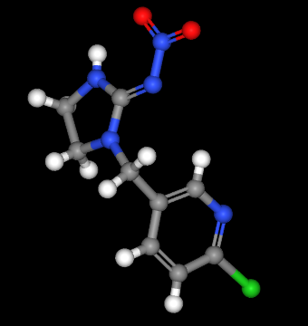
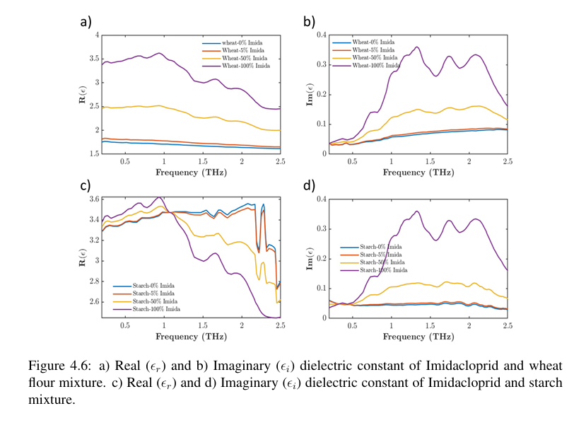
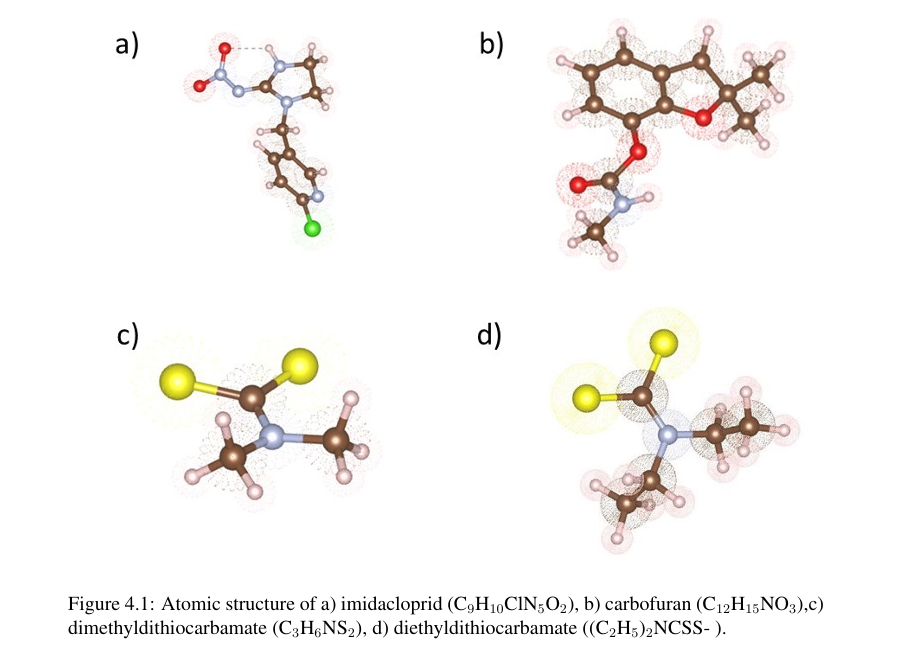

Overview
My density functional theory work runs along two threads. The first computes optical properties of agricultural biomarkers to feed metamaterial sensor design. The second studies Janus γ-X2YZ monolayers for photocatalysis and thermoelectrics, confirming their stability and performance from ab-initio calculations.
Papers
- Density functional theory calculations of optical properties in agricultural biomarkers for metamaterial integration Published within: RSC Advances (2025)
- DFT study of Janus γ-X2YZ monolayers for photocatalysis & thermoelectrics confirming stability and performance Under preparation
Gallery


